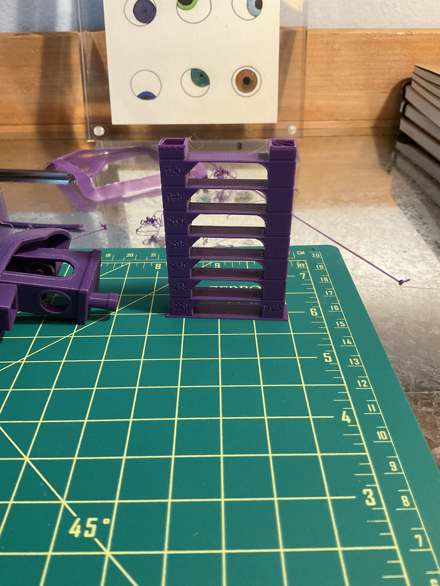

stress tests!
I printed a couple stress tests to check my calibration under various scenarios. First, I printed an 'all-in-one' test that I found while watching YouTube videos, which includes overhang, bridging & stringing tests:


I'm pretty happy with how it turned out! (The results seemed comparable with the YouTuber I was watching in any case :). I was pleasantly surprised at the overhang tests which only starts to deteriorate at ~60*, but even then it looks prety good from the front all the way through 80*. The bridging tests all passed, and it was only the stringing test that I should probably work more on- there's likely some retraction settings to change or maybe a lower nozzle temperature. So, I went ahead and printed a temperature tower; Cura has a 'calibration shapes' extension that includes the temp tower as well as a post-processing script to automagically generate the gcode for the temperature changes:

I ran this print while I was cooking, and it looks like something happened towards the top because there should have been a complete '190*' section. But, to my eye, everything from 220 to 190 looks relatively similar to my eye (there's no major stringing, in any case). The solutech filament I'm using says that it works best from 190-210*, so I'll stick with my default setting of 200* for now.
These calibration prints had me thinking more about a possible end-user calibration interface, at least insofar as it would help me out. These prints above are widely used and have been optimized to e.g. test several things at once, minituarized to run quickly. One thing that seems helpful to me is the ability to co-vary a couple of settings quickly to see how they affect one another. For example, adhesion is a function of print surface area, bed temperature, z-offset, fan speed (as well as mechanical factors, like bed leveling)... Maybe I'm off-base with how I'm imagining people use their printers, but a tool that let you explore these factors together - and perhaps even suggests the parameters to inspect for a given problem - might be helpful. This also has me curious going forward about calibration tolerance windows: the resources I'm reading generally treat calibration as a universal- once your printer is dialed in, you're good to print anything! This might just be because I'm looking at beginner-level tutoriasl, but I can imagine printing different objects that require specific calibrations. Small & detailed objects might need a lower flow rate to reduce oozing over fine features, use cases where sanding off brim residue isn't feasible require alternative bed adhesion measures, etc. Anyways, I will be interested to see if these thoughts actually play out in practice as I print More Stuff!